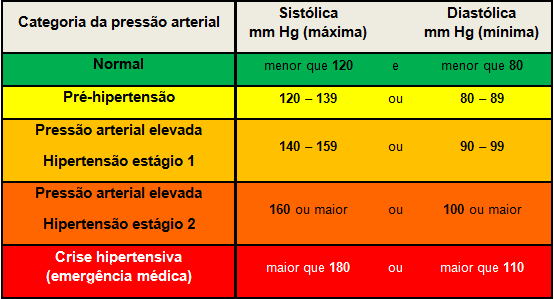

Pressão Arterial
O Que é Pressão Arterial?
É a pressão que o sangue exerce sobre nossas artérias.
O coração é o órgão muscular responsável por bombear o sangue para o nosso corpo. Quando o sangue é impulsionado, ele acaba exercendo certa força contra as paredes das artérias. Essa força é chamada de pressão arterial e pode ser definida como a pressão que o sangue em circulação exerce nas paredes de nossas artérias.
Os valores normais da pressão arterial são determinados por ações do sistema nervoso, sistema cardiovascular e os rins. Distúrbios nesses sistemas e órgãos podem alterar a pressão arterial e causar problemas, como a hipertensão.
Os Valores Contidos
Ao analisar a pressão arterial, percebemos que ela é composta por dois números. O primeiro, que é o maior valor, representa a pressão sistólica, ou seja, a pressão do sangue quando ele é bombeado para o corpo. Já o valor menor é a pressão diastólica e representa a pressão no momento em que o coração relaxa entre um batimento e outro. Esses valores são medidos em milímetros de mercúrio.

Uma pressão considerada ideal tem valores de 120/80 mmHg.
Em pacientes com diabetes e problemas renais, o ideal é que a pressão esteja menor que 130/80 mmHg.
Como é feita a Medida?
A pressão arterial pode ser medida de diversas formas, tais como a técnica auscultatória com uso de esfigmomanômetro de coluna de mercúrio ou aneroide ou ainda aparelhos semiautomáticos digitais. Atualmente, percebe-se mais frequentemente o uso de equipamentos aneroides e semiautomáticos.
Apesar de ser relativamente simples, antes de se realizar a medição da pressão arterial, deve ser feita uma avaliação de alguns critérios.
Primeiramente, deve-se garantir que o paciente esteja calmo e em um ambiente com temperatura agradável. O recomendado é que ele fique em repouso por pelo menos cinco minutos. Deve-se verificar ainda se o paciente está com a bexiga vazia, não praticou exercícios nas últimas horas e não bebeu bebidas alcoólicas ou café.
Além disso, ele não deve ter se alimentado ou fumado na última meia hora.
Além dessas recomendações, é importante que o paciente esteja posicionado de maneira adequada. O ideal é que ele esteja sentado, com pernas descruzadas, pés no chão e costas apoiadas no encosto da cadeira. O braço deve ser colocado na altura do coração, o cotovelo deve estar levemente flexionado e a palma da mão deve estar virada para cima.